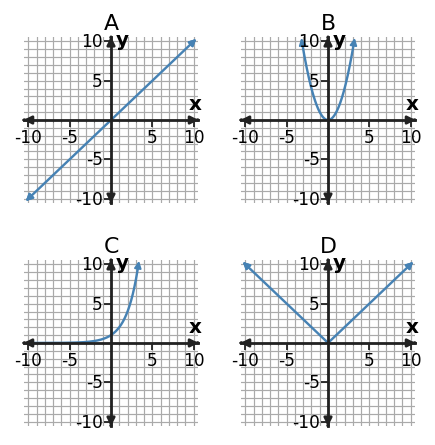

Algebra 1 · Unit 4 · Section 4.1 · Investigation
Function Family Fingerprints
Recognizing Function Families
Learning Target: Students will identify common function families from graphs, equations, tables, and contexts.
Directions
- Work with a partner unless your teacher assigns a different grouping.
- Show the evidence you use, not only the final answer.
- When a representation changes, keep the meaning of the quantities attached to your work.
- Revise an answer if later evidence shows that your first claim was incomplete.
Part 1 · Family Fingerprints

Label the four graphs Linear, Quadratic, Exponential, or Absolute Value. Record one visual clue for each.
Part 2 · Table Evidence
| Table | Outputs for $x=0,1,2,3$ | Best evidence | Family |
|---|---|---|---|
| A | 2, 5, 8, 11 | ||
| B | 1, 4, 9, 16 | ||
| C | 3, 6, 12, 24 | ||
| D | 2, 1, 0, 1 |
Part 3 · Evidence Ranking
Choose one family. Rank graph, equation, table, and context from strongest to weakest evidence for this specific example, and defend your ranking.
Synthesis
Why can the word “increases” by itself never identify a function family?